CloudSEN12
A Benchmark Dataset for Cloud Semantic Understanding
 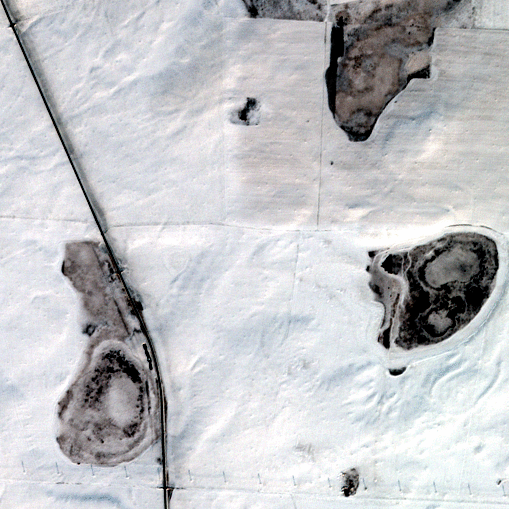
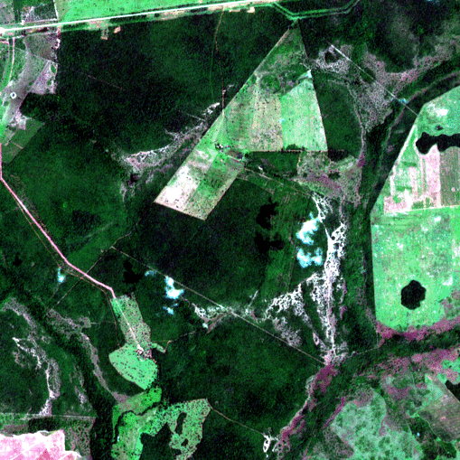
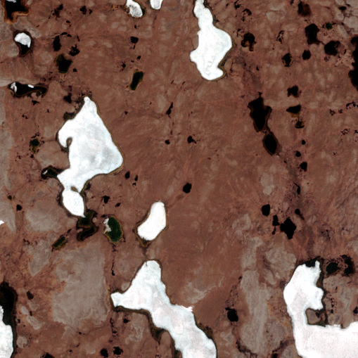
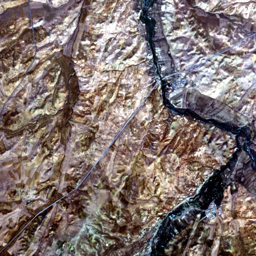
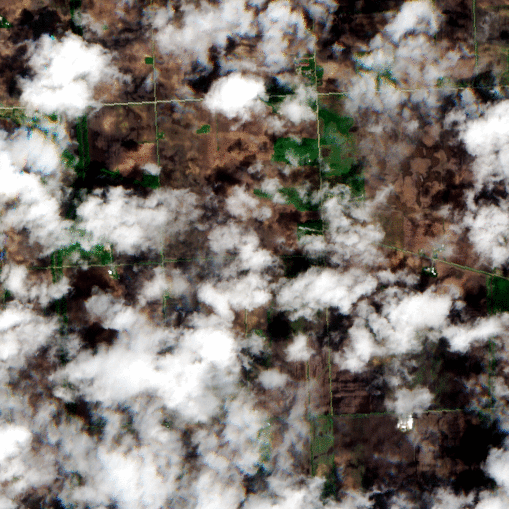
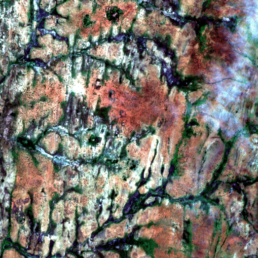
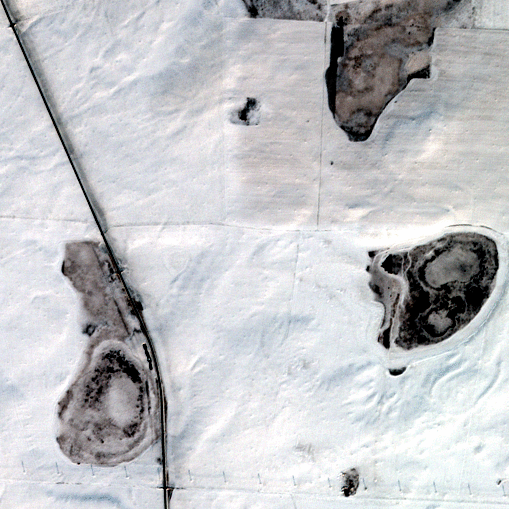
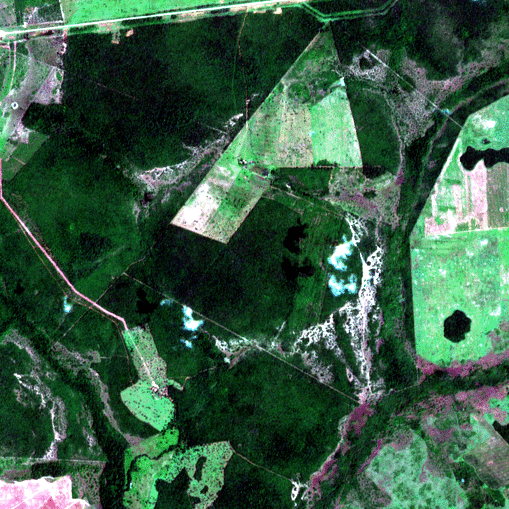
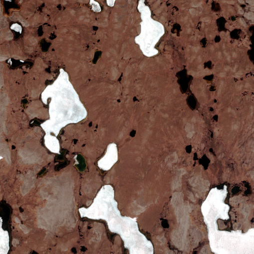
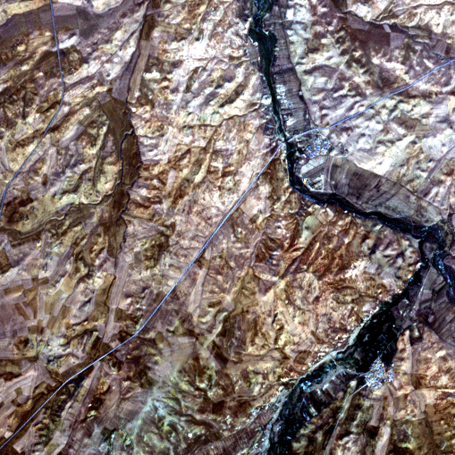
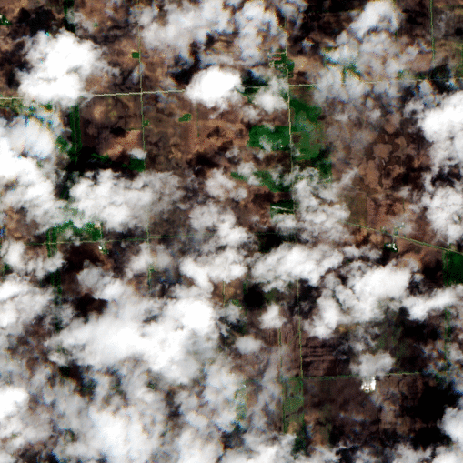
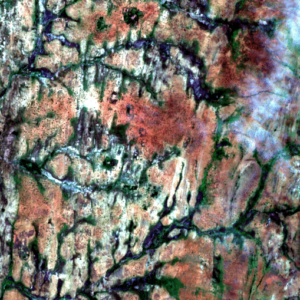
CloudSEN12 is a LARGE dataset (~1 TB) for cloud semantic understanding that consists of 49,400 image patches (IP) that are evenly spread throughout all continents except Antarctica. Each IP covers 5090 x 5090 meters and contains data from Sentinel-2 levels 1C and 2A, hand-crafted annotations of thick and thin clouds and cloud shadows, Sentinel-1 Synthetic Aperture Radar (SAR), digital elevation model, surface water occurrence, land cover classes, and cloud mask results from six cutting-edge cloud detection algorithms.
CloudSEN12 is designed to support both weakly and self-/semi-supervised learning strategies by including three distinct forms of hand-crafted labeling data: high-quality, scribble and no-annotation. For more details on how we created the dataset see our paper: CloudSEN12 - a global dataset for semantic understanding of cloud and cloud shadow in Sentinel-2.
Ready to start using CloudSEN12?